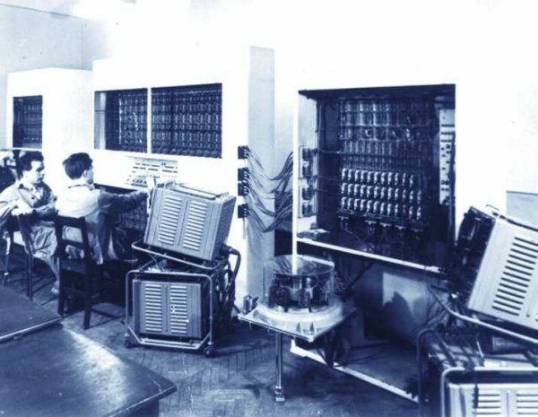

Az első magyar számítógép
Az M-3 Komputer
A Magyar M-3 számítógép a magyar informatikai történet egyik fontos mérföldköve. Az M-3-at az 1960-as évek végén fejlesztették ki a Műszaki Fejlesztési Intézetben, és jelentős szerepe volt a magyar számítástechnika fejlődésében. Ez volt az első hazai tervezésű számítógép, amely a nemzetközi szinten is versenyképes volt. Az M-3-at elsősorban a tudományos és ipari számítások elvégzésére használták.
A számítógép több kiemelkedő tulajdonsággal rendelkezett, amelyek elősegítették elterjedését. Az M-3 a következő jellemzőkkel bírt:
- 16 bites gépi szóhossz
- 8KB memória
- Gyors matematikai műveletek végrehajtása
- Képes volt egyszerre több feladatot is kezelni
Az M-3-at széleskörűen alkalmazták az egyetemi kutatásokban, ipari számításokban és statisztikai elemzésekben. A gép tervezésekor külön figyelmet fordítottak a megbízhatóságra és az egyszerű karbantartásra, ami hozzájárult hosszú élettartamához. Az M-3 az 1970-es években vált az ország egyik legismertebb számítógépének, és jelentős szerepe volt a magyar informatikai oktatásban is. Az M-3 számítógép az idő múlásával egyfajta "ikonikus" szereplővé vált a magyar számítástechnika történetében.
